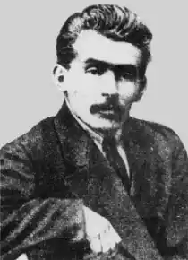

Гнат Васильович Михайличенко (*27 вересня (9 жовтня) 1892, Миропілля (Краснопільський район) — †21 листопада 1919, Київ) — письменник і політичний діяч, член Центральної Ради. У 20—30-і рр. ХХ ст. вулиця Пилипа Орлика мала його ім'я.
Син селянина. Навчався у 1908—1912 рр. у Харківському рільничому училищі, звідки за зв'язки з есерами його перевели до Московського рільничого училища. Живучи в Москві, продовжив навчання в університеті Шанявського. Мобілізований 1914 р. до армії, втік з фронту, перебував на нелегальному становищі. 1916 р. за належність до харківської організації лівих есерів військовий суд засудив його до шести років каторги (яку замінили засланням) й довічного поселення в Сибіру. Покару відбував у с. Тулуп'єму Нижньоудинського повіту Іркутської губернії.
Після Лютневої революції 1917 р. повернувся в Україну. Був одним із лідерів Української комуністичної партії (боротьбистів). Від лютого по квітень 1919 р. входив до колегії Київської ГубЧК. Від березня 1919 р. — нарком освіти УСРР. Співредактор (разом із Михайлем Семенком) першого числа "Мистецтва". У травні-липні 1919 р. воював на Західному фронті. З приходом до Києва у вересні 1919 р. Добровольчої армії перейшов на підпільну партійну роботу. Разом із Василем Чумаком розстріляний денікінською контррозвідкою за участь в організації повстання проти білогвардійців на Київщині. Писав вірші з 1911 р., прозу з 1915 р. Автор "Блакитного роману" (Харків, 1921), повісти "Історія одного замаху. (Історична повість з життя українських революціонерів до революції)" (Одеса, 1918), збірки "Новелі" (Харків, 1922), віршів. З передмовою і за редакцією Михайличенка вийшла посмертна збірка оповідань Андрія Заливчого "З літ дитинства" (Київ, 1919).